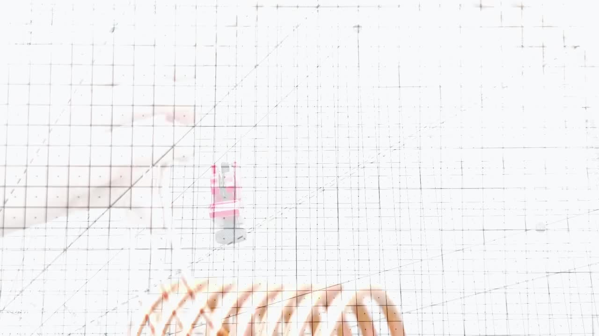
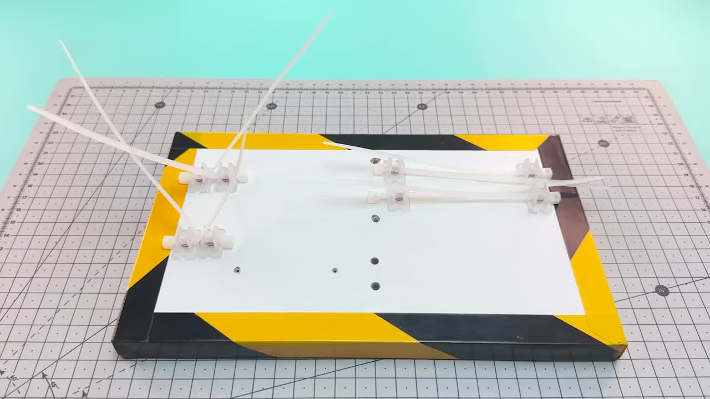

Homemade Air Conditioner
Project Overview: Building a Real Refrigeration System
炎炎夏日，想拥有一个便携高效的降温神器吗？本教程将带您用最少的材料，打造一个功能齐全的迷你空调，它能够快速降低空气温度，甚至让铜管结霜，带来极速清凉体验！
Cooling Temperature
极速降温
Components Needed
所需材料少
Design
便携易用
Materials List
Step-by-Step Instructions
使用 4x6mm 铜管和圆形物体 (如漆罐) 弯绕形成螺旋形线圈。这将作为我们制冷系统的蒸发器。绕制大约 8 圈。 Bend the 4x6mm copper tube around a round object like a spray can to form a spiral coil. This will be our evaporator. Make about 8 turns.
使用割管器切断蒸发器线圈的铜管。稍微调整线圈的形状，并将两端稍微弯曲，方便后续连接。 Use the tube cutter to cut the copper tube for the evaporator coil. Slightly adjust the shape and bend the ends slightly for later connections.
使用剩余的 4x6mm 铜管，同样用圆形物体弯绕，但这次留出更宽的间距，并减少圈数。这将是冷凝器。 Using the remaining 4x6mm copper tube, bend it around a round object, but leave more space between turns and make fewer turns. This will be the condenser.
准备一块木板作为底座。在木板上预先打好孔，用于固定塑料固定夹和其他组件。这些孔的位置需要根据您的组件尺寸调整。 Prepare a wooden board as the base. Drill holes beforehand to fix the plastic clamps and other components. The hole positions should be adjusted based on your component sizes.
使用扎带穿过底座上的孔和塑料固定夹，将蒸发器和冷凝器线圈固定在木板上。确保铜管牢固不晃动。 Use cable ties inserted through the base holes and plastic clamps to fix the evaporator and condenser coils to the wooden board. Ensure the tubes are secure.
取一根毛细铜管 (Ø2mm 外径 | Ø0.8mm 内径)，用钢笔或类似细圆棒弯绕一小段，形成紧密的螺旋。这段毛细管是制冷循环中的关键组件。 Take a capillary copper tube (Ø2mm outer | Ø0.8mm inner) and bend a small section tightly around a pen or similar thin rod. This capillary tube is a key component in the refrigeration cycle.
将毛细管的一端插入冷凝器的一端，另一端插入蒸发器的一端。使用尖嘴钳轻轻挤压连接处，将大铜管的管口收紧，固定住毛细管。 Insert one end of the capillary tube into one end of the condenser, and the other end into one end of the evaporator. Use pliers to gently crimp the larger tubes around the capillary tube at the connections.
为了确保制冷剂不会泄漏，使用电烙铁和焊锡丝将毛细管与大铜管的连接处焊接密封。焊接前可以使用焊锡膏帮助焊接。 To ensure no refrigerant leaks, use a soldering iron and solder wire to seal the connections between the capillary tube and the larger copper tubes. Use flux beforehand to aid soldering.
将 12V 风扇和 12V 微型气泵固定在底座上。气泵可以使用小木块和金属支架辅助固定。确保风扇的出风方向正对着蒸发器线圈。 Fix the 12V fan (SUNON Maglev) and the 12V miniature air pump to the base. Use a small wooden block and metal strap to help secure the pump. Ensure the fan blows air directly onto the evaporator coil.
切割两段 PVC 软管 (6x8mm)。将一段软管连接到气泵的 OUT 口，另一端连接到冷凝器的 输入 端。将另一段软管连接到蒸发器的 输出 端，另一端连接到气泵的 IN 口。这样就形成了密闭的循环回路。 Cut two pieces of PVC soft tube (6x8mm). Connect one tube from the air pump's OUT port to the condenser's input end. Connect the other tube from the evaporator's output end to the air pump's IN port. This creates a closed loop circuit.
将风扇和气泵的电源线连接到 9V 电池盒的输出端。注意正负极的连接。可以使用焊锡加强连接。 Connect the power wires of the fan and air pump to the output terminals of the 9V battery holder. Pay attention to positive and negative connections. Soldering can be used to strengthen the connections.
使用注射器和细针头，从毛细管 进入蒸发器 的一端（即靠近蒸发器线圈的连接处）注入异丁烷气体。异丁烷是本系统的核心制冷剂。 Using a syringe and fine needle, inject Isobutane gas into the system from the end of the capillary tube entering the evaporator (the connection point near the evaporator coil). Isobutane is the core refrigerant for this system.
How it Works: A Simple Physics Cycle
本迷你空调基于简单的制冷循环原理。核心在于异丁烷气体（C₄H₁₀）。 This mini air conditioner is based on a simple refrigeration cycle principle. The core is Isobutane gas (C₄H₁₀).
这个循环不断重复，持续从环境中吸收热量，实现制冷效果。 This cycle repeats continuously, absorbing heat from the environment to achieve cooling.
Testing and Results: Rapid Frosting!
连接电池后，气泵和风扇开始工作。异丁烷在蒸发器中迅速蒸发，吸收热量。可以看到蒸发器铜管表面很快出现凝结水并开始结霜。 After connecting the battery, the air pump and fan start working. The isobutane quickly evaporates in the evaporator, absorbing heat. You can see condensation appearing on the evaporator copper tube surface and quickly starting to frost.
使用测温仪测量，蒸发器表面的温度迅速下降。 Using a thermometer, the surface temperature of the evaporator drops rapidly.
经过一段时间运行，温度可以达到惊人的 -10°C！风扇将流经冰冷铜管的空气吹出，形成强劲的冷风。 After running for some time, the temperature can reach an amazing -10°C! The fan blows air passing over the freezing cold copper tube, creating a strong cool breeze.
Success!
Say Goodbye to Heat, Make Your Own Coolness!
现在您不必为昂贵的商业空调发愁了。用这些简单的材料和步骤，您也能拥有一个实用的迷你空调，在炎热的夏夜享受清凉！ Now you don't have to worry about expensive commercial air conditioners. With these simple materials and steps, you can also have a practical mini air conditioner to enjoy coolness on hot summer nights!
如果您成功制作或有更好的方法，请在评论区分享您的经验！ If you successfully built it or have better methods, please share your experience in the comments!
Special Thanks to Our Supporters
感谢所有通过不同方式支持我们的朋友们！ Thank you to all friends who support us in various ways!
© 2024 DIY Tutorials. All rights reserved.